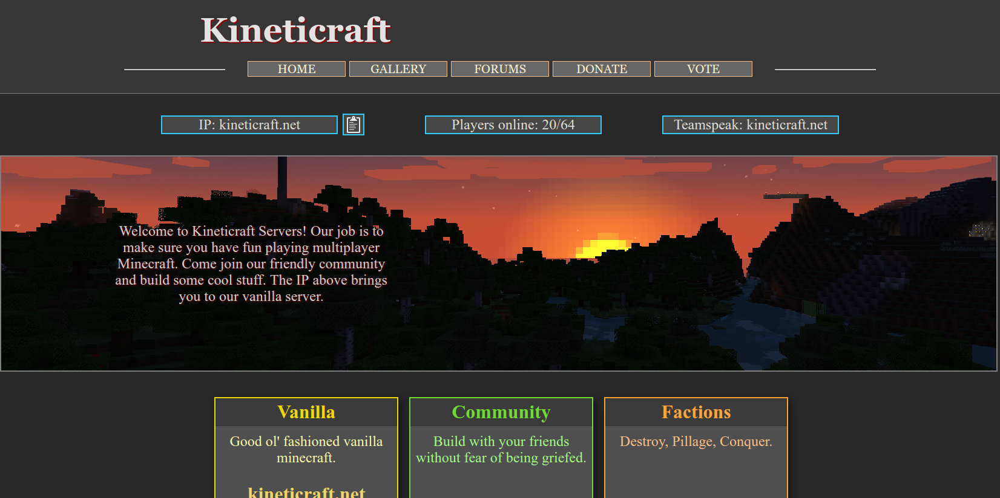

<!DOCTYPE html><html></html><head><title>Brian - Projects</title><link href="https://fonts.googleapis.com/css?family=Source+Sans+Pro" rel="stylesheet"><!-- Google Analytics--><script>(function(i,s,o,g,r,a,m){i['GoogleAnalyticsObject']=r;i[r]=i[r]||function(){
(i[r].q=i[r].q||[]).push(arguments)},i[r].l=1*new Date();a=s.createElement(o),
m=s.getElementsByTagName(o)[0];a.async=1;a.src=g;m.parentNode.insertBefore(a,m)
})(window,document,'script','https://www.google-analytics.com/analytics.js','ga');
ga('create', 'UA-92261942-1', 'auto');
ga('send', 'pageview');
</script><link rel="stylesheet" type="text/css" href="css/app.css"><link rel="stylesheet" type="text/css" href="css/content-page.css"><link rel="stylesheet" type="text/css" href="css/projects.css"></head><body><div id="menu"><div id="menu-items"><div><a class="menu-item" id="home-button" href="/"><span class="menu-item-text">Home<div class="underline-slide"></div></span><div class="dropdown-content"><a href="#">Link 1</a><a href="#">Link 2</a><a href="#">Link 3</a></div></a></div><div><a class="menu-item" href="thoughts"><span class="menu-item-text">Thoughts<div class="underline-slide"></div></span></a></div><div><a class="menu-item" href="projects"><span class="menu-item-text">Projects<div class="underline-slide"></div></span></a></div><div><a class="menu-item" href="#"><span class="menu-item-text">Media<div class="underline-slide"></div></span></a></div><div><a class="menu-item" href="about"><span class="menu-item-text">About<div class="underline-slide"></div></span></a></div></div></div><script>// Underline the current page based on what was passed to this mixin through the selected parameter
var currentPage = "Projects"
var menuItems = document.getElementsByClassName("menu-item-text")
for (var i = 0; i < menuItems.length; i++) {
  if (menuItems[i].textContent.toLowerCase() == currentPage.toLowerCase()) {
    // Set the underline to full width
    menuItems[i].childNodes[1].setAttribute("style", "width: 100%")
  }
}
</script><div id="container"><div id="main"><div id="categories"><a class="category">Coding</a><span class="category-spacer"></span><a class="category">Art</a></div><div id="content"><div class="project-pane"><h2 class="project-title-text">Kineticraft.net</h2><div class="project-text"><p>I used to run a vanilla Minecraft server with a few friends. When we realized we needed a website to garner more attention, I took it upon myself to create one. I could have just used some Wordpress template, but I had a specific idea of how I wanted it to look that only custom code could create.</p><p>This website was the result. It was the first website I ever built and was hand coded in html, css, and php. I'm proud of the design, although my color selection could have been a bit better. The code isn't very pretty, but it get's the job done.</p><p class="last">The server is still running today. I gave the domain away to a few dedicated staff. They have since updated the website to a <a href="https://github.com/flarum/flarum">Flarum</a> template. If you play Minecraft, pay them a visit. Tell them ThunderBird21 sent you.</p></div></div></div></div><div id="footer"><ul><li class="footer-item">Home</li><li class="footer-item">About</li><li class="footer-item">Thoughts</li><li class="footer-item">Projects</li><li class="footer-item">Media</li></ul></div></div></body>